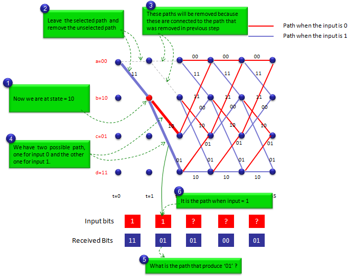

| Encoding/Decoding - Presentation of Convolutional Code |
|
There can be many different ways to represent the process for convolutional code.. but I think following three methods are the most common representation you would see in any materials about encoding/decoding process.
What would be the common things to all of these methods ? It is damm difficult and confusing -:) The examples shown here are the simplest thing. I am almost 100% sure that I would have difficulties understanding these diagrams at first look... do it again ... do it again ... eventually understand ... and get confused again .... do get disappointed about yourself if you have the same difficulties.
Don't try memorizing these illustrations(examples). Try to cleary understand once. No problem with forgetting. Just come back to these examples again whenever you need it. If it takes a couple of hours to understand these examples for the first time, it would take only a couple of minutes when you revisit here.
Shift Register representation is closest form of physical implemenation of the encoder and this would be the best representation if you are a hardware (or FPGA) designer. But it would be very difficult to figure out the output bit stream if you have to get them from drawing. Only two bit shift register gives you the very complicated process of interpretation as shown below. So if the number of shift register is very high, it would be almost impossible for you to figure out the output bit stream by drawing.
a) Answer following questions for the illustration. What is the current status (Values in shift register) ? --> 00 (The diagram on the left - Blue) What is the input value ? --> 0 (The diagram on the left - Red) What is the output value ? --> 00 (The diagram on the left - Green) What is the next status (Values in shift register after encoding) ? --> 00 (The diagram on the right - Blue)
b) Answer following questions for the illustration. What is the current status (Values in shift register) ? --> 01 (The diagram on the left - Blue) What is the input value ? --> 0 (The diagram on the left - Red) What is the output value ? --> 11 (The diagram on the left - Green) What is the next status (Values in shift register after encoding) ? --> 00 (The diagram on the right - Blue)
c) Answer following questions for the illustration. What is the current status (Values in shift register) ? --> 10 (The diagram on the left - Blue) What is the input value ? --> 0 (The diagram on the left - Red) What is the output value ? --> 10 (The diagram on the left - Green) What is the next status (Values in shift register after encoding) ? --> 01 (The diagram on the right - Blue)
d) Answer following questions for the illustration. What is the current status (Values in shift register) ? --> 11 (The diagram on the left - Blue) What is the input value ? --> 0 (The diagram on the left - Red) What is the output value ? --> 01 (The diagram on the left - Green) What is the next status (Values in shift register after encoding) ? --> 01 (The diagram on the right - Blue)
e) Answer following questions for the illustration. What is the current status (Values in shift register) ? --> 00 (The diagram on the left - Blue) What is the input value ? --> 1 (The diagram on the left - Red) What is the output value ? --> 11 (The diagram on the left - Green) What is the next status (Values in shift register after encoding) ? --> 10 (The diagram on the right - Blue)
f) Answer following questions for the illustration. What is the current status (Values in shift register) ? --> 01 (The diagram on the left - Blue) What is the input value ? --> 1 (The diagram on the left - Red) What is the output value ? --> 00 (The diagram on the left - Green) What is the next status (Values in shift register after encoding) ? --> 10 (The diagram on the right - Blue)
g) Answer following questions for the illustration. What is the current status (Values in shift register) ? --> 10 (The diagram on the left - Blue) What is the input value ? --> 1 (The diagram on the left - Red) What is the output value ? --> 01 (The diagram on the left - Green) What is the next status (Values in shift register after encoding) ? --> 11 (The diagram on the right - Blue)
h) Answer following questions for the illustration. What is the current status (Values in shift register) ? --> 11 (The diagram on the left - Blue) What is the input value ? --> 1 (The diagram on the left - Red) What is the output value ? --> 10 (The diagram on the left - Green) What is the next status (Values in shift register after encoding) ? --> 11 (The diagram on the right - Blue)
Following two are the same encoding process. (The description is transition a) in previous section)
Following two are the same encoding process. (The description is transition e) in previous section)
At least to me, Trellis Diagram is the most complicated presentation camparing the other two representation we saw above. But once I understand the logic, I found it so useful way of presentation.
Basically Trellis Diagram is made up of matrix of nodes (Blue filled circle shown below). Each of the nodes represents each status in the status diagram. Each column of the nodes represents all the possible status at a certain time. For example, the first column (the leftmost colum represents all the possible status at the initial status (t = 0) of the statemachine. The second column represents all th possible status when t = 1. The third column represents all th possible status when t = 2 and so on.
Each of the nodes can have two possible path to move to next status. One path is the transition path when the input bit is 0 and the other path is the transition path when the input bit is 1. The path when the input bit = 0 is marked in red line and the path when the input bit = 1 is marked in blue line.
If the statemachine starts with '00', all the possible state transition can be represented as below. Follow each of green arrows (dotted lines) and trying to assosicate the statemachine and Trellis diagram.
To represent the process in simpler way, let's take an example of the first single transition. I will explain the steps of interpretation in Q & A form. I assume that the state machine is at t = 0 (initial status) and the status bits are '00'. i) What is the current status bit ? --> 00 (follow the green line marked as (1)) ii) What is the input bit ? --> '1' (Input bit at t = 0 is given as '1' shown at the bottom in red rectangle). iii) There are two path coming out of '00' status. Which path we have to follow ? --> Follow the path marked in green arrow.(follow the green line marked as (2)) iv) What is the output of this transition --> 11.(follow the green line marked as (3)) v) What is the next status ? --> 10(follow the green line marked as (4))
Follow these steps several times until you clearly understand the procedure before you go next.
In previous sections, we saw several different ways to represent a same entity ('Convolutional encoder') and you would have seen those representation in the most of digital communication text books. But if you look for the encoder description in various technical specification(for example, 3GPP specification 36.212 5.1.3 Channel Coding), you would see the encoders represented in the form of polynomials. At first glance, it would be hard to grasp the meaning out of those polynomials, but it is very handy way of expression because it is simple and probably more importantly it can be analyzed by many mathematical techniques.
The first thing you need to understand the meaning of a polynomial is to understand how each term of the polynomial is related to each component of shift register representation. Do practice of this kind of conversion until your brain automatically draw the pictures when you see a set of polynomial.
In addition to polynomials, there are a couple of parameters you need to know to understand various text and software (e.g, Matlab). Try to remember the meaning of the following terms.
Applying the procedures explained above, let's take an example when we have input bit stream '11010' going into the encoder. The output bit stream become '1101010010'. This encoding process can be illustrated as shown below. This is the one of the simplest example of trellis diagram for the simplest encoder (only two shift register). So make it sure that you clearly understand this example.

|